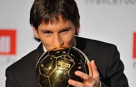
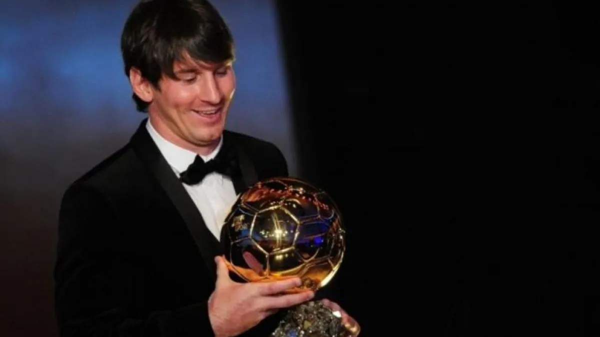
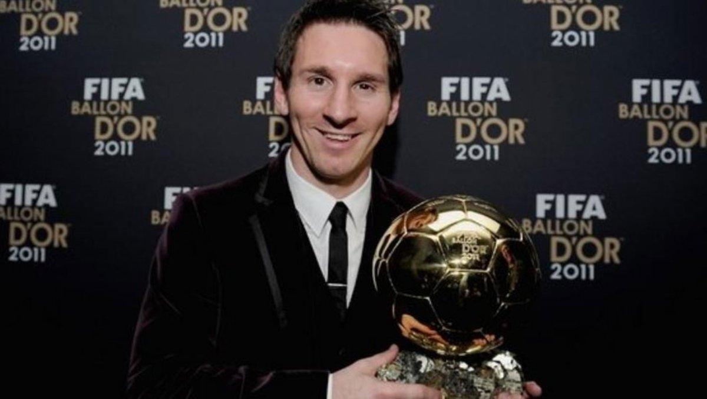
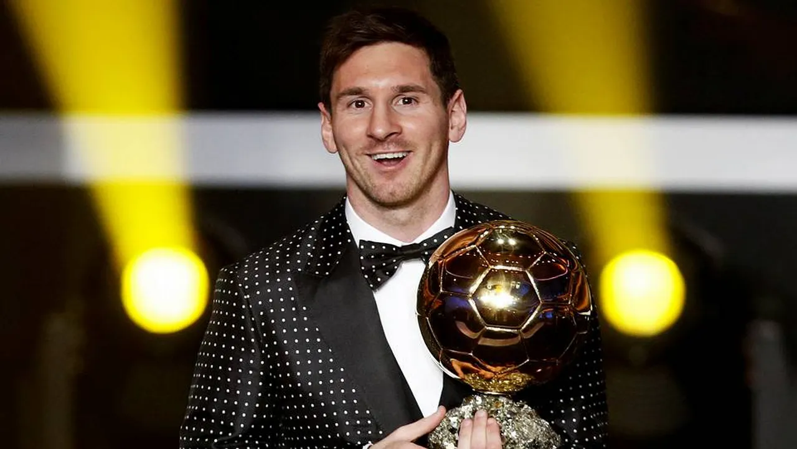
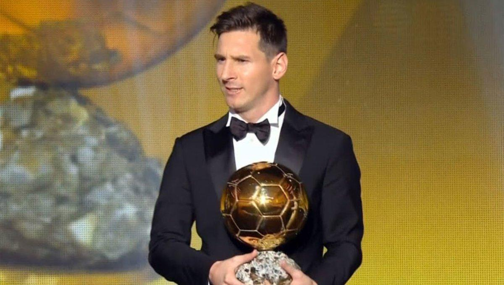
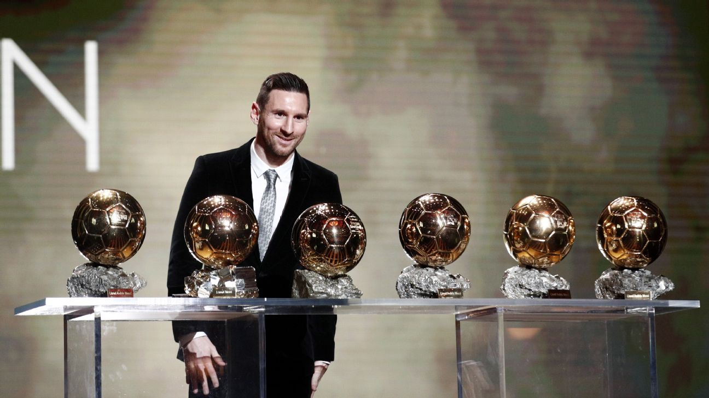
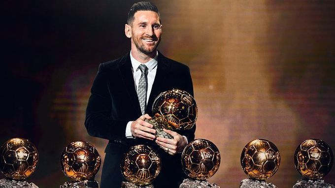
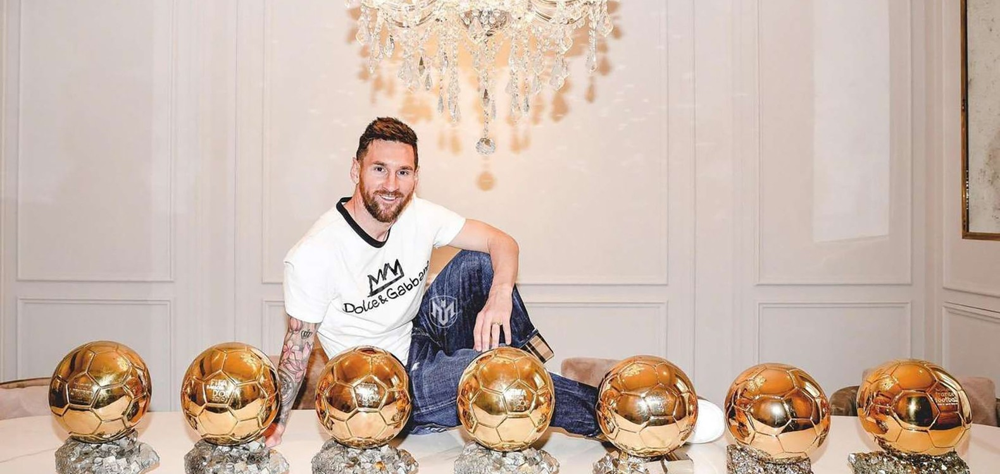

Lionel Messi ganó su primer Balón de Oro en 2009 tras una temporada espectacular con el FC Barcelona. En La Liga, jugó 35 partidos, anotó 23 goles y dio 11 asistencias. En la Liga de Campeones de la UEFA, disputó 12 encuentros, marcó 9 goles y aportó 5 asistencias. En la Copa del Rey, jugó 8 partidos, con 6 goles y 2 asistencias. Su rendimiento fue clave para que el Barça lograra el histórico triplete esa temporada.

Tras otra temporada brillante con el FC Barcelona, Lionel Messi jugó 53 partidos en total, marcó 47 goles y dio 11 asistencias. Fue el máximo goleador de la Liga con 34 tantos, y su rendimiento individual fue extraordinario, consolidándose como uno de los mejores futbolistas del mundo

En esta temporada jugó 55 partidos, marcó 53 goles y dio 24 asistencias. Fue fundamental en la conquista de La Liga y la UEFA Champions League, destacándose especialmente en la final contra el Manchester United, donde anotó un gol. Su rendimiento lo consolidó como el mejor jugador del mundo por tercer año consecutivo.

Esta fue la temporada mas histórica del 10. Disputó 60 partidos con el FC Barcelona, en los que anotó 73 goles y dio 29 asistencias, estableciendo un récord absoluto de goles en una sola temporada. Además, ese mismo año natural (2012), alcanzó la cifra récord de 91 goles sumando club y selección.

Lionel Messi ganó su quinto Balón de Oro en 2015, luego de una temporada 2014/15 brillante con el FC Barcelona. En total, jugó 57 partidos, marcó 52 goles y dio 26 asistencias. Fue una pieza clave en el segundo triplete de la historia del club (La Liga, Copa del Rey y UEFA Champions League). Formó un tridente letal junto a Neymar y Luis Suárez, siendo decisivo en los partidos más importantes, como la final de Champions ante la Juventus

Tras una temporada destacada a nivel individual con el FC Barcelona. Disputó 50 partidos, en los que anotó 51 goles y dio 22 asistencias. Fue el máximo goleador de La Liga (36 goles) y también el máximo goleador de Europa, llevándose su sexta Bota de Oro. Aunque el Barça ganó La Liga, no pudo conquistar la Champions ni la Copa del Rey, pero el rendimiento individual de Messi fue tan sobresaliente que le bastó para superar a Virgil van Dijk y Cristiano Ronaldo en la votación.

En la temporada 2020/21 y el primer semestre de 2021. Durante ese período, jugó 56 partidos, marcó 41 goles y dio 17 asistencias entre el FC Barcelona, el PSG (brevemente) y la Selección Argentina.
Más allá de sus números, el punto más destacado fue que ganó la Copa América 2021 con Argentina, su primer título con la selección mayor, siendo el mejor jugador del torneo, goleador (4 goles) y líder en asistencias (5). También ganó la Copa del Rey con el Barça. Su influencia tanto a nivel de clubes como en la selección fue clave para llevarse el Balón de Oro una vez más.

Lionel Messi ganó su octavo Balón de Oro en 2023, principalmente gracias a su histórica actuación en el Mundial de Qatar 2022, donde lideró a la Selección Argentina al título. En ese torneo, jugó 7 partidos, marcó 7 goles y dio 3 asistencias, siendo elegido el Mejor Jugador del Mundial (Balón de Oro del torneo).
Durante la temporada 2022/23, combinando su tiempo en el Paris Saint-Germain y la selección, disputó 55 partidos, anotó 32 goles y dio 25 asistencias. Con el PSG ganó la Ligue 1, pero su consagración con Argentina fue lo que más peso tuvo en la votación, llevándolo a superar a Haaland y Mbappé en la carrera por el galardón.